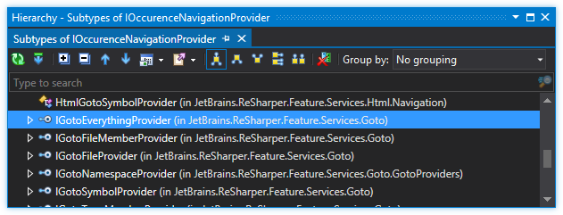

导航
ReSharper导航包含两个主要部分：
- 上下文导航（“从此处导航...”）
- 全球导航（“转到...”）
导航框架是相当可插入的，因此在大多数情况下，您要做的就是简单地提供自己的组件。您可以实现以下功能：
上下文导航
上下文导航由两部分组成：搜索引擎和用户交互提供程序。这两个部分在ReSharper Framework中分为不同的实体。
功能提供者
功能提供者自己代表功能。也就是说，每个导航功能只有一个提供程序，而与该功能应使用的语言和环境数量无关。
每个上下文导航提供程序都实现IContextSearchProvider或者INavigateFromHereProvider接口。的IContextSearchProvider接口定义如下：
public interface IContextSearchProvider { [CanBeNull] Action GetSearchesExecution(IDataContext dataContext, INavigationExecutionHost host); }该动作GetSearchesExecution()方法返回实际上是导航功能的执行。当此方法返回时null ，则表示此功能不适用于此数据上下文。的INavigationExecutionHost是一个宿主对象，可用于执行某些UI活动，例如显示下拉框或高级搜索对话框。
的INavigateFromHere界面非常类似于IContextSearchProvider -它只有一种方法可返回导航执行和其他数据，以在“从此处导航”下拉菜单中显示。
如果您希望导航项显示在“从此处导航”菜单中，则必须实施INavigateFromHereProvider接口。
绑定动作
您无需在动作处理程序的方法中编写任何代码，因为所有功能逻辑都需要在导航提供程序内部编写。将动作绑定到导航提供程序所需要做的只是从中派生自定义动作处理程序类ContextNavigationActionBase （如果您希望您的操作显示在“从此处导航”菜单中）或ContextSearchActionBase 。
此外，您的提供者应饰以ContextNavigationProvider属性。
如果您的导航并不复杂，那么您只需要了解上下文导航框架即可。
例
这是使用Windows资源管理器简单导航到相应文件夹的示例。
using System; using System.Collections.Generic; using System.Diagnostics; using JetBrains.Annotations; using JetBrains.Application.DataContext; using JetBrains.ProjectModel; using JetBrains.ReSharper.Feature.Services.ContextNavigation; using JetBrains.Util; using DataConstants = JetBrains.ProjectModel.DataContext.DataConstants; namespace ReSharperPlugIn6 { [ActionHandler] public class SimpleNavigation : ContextNavigationActionBase<SimpleNavigationProvider> { } [ContextNavigationProvider] public class SimpleNavigationProvider : INavigateFromHereProvider { [CanBeNull] private static ProcessStartInfo GetProcessStartInfo([NotNull] FileSystemPath path) { return new ProcessStartInfo("explorer.exe", path.ExistsFile ? string.Format(@"/select,""{0}""", path) : string.Format(@"""{0}""", path.Directory)); } [CanBeNull] private static FileSystemPath GetPathByContext([NotNull] IDataContext context) { var projectModelElement = context.GetData(DataConstants.PROJECT_MODEL_ELEMENT); var projectItem = projectModelElement as IProjectItem; if (projectItem == null) return null; if (!projectItem.Location.Directory.ExistsDirectory) return null; return projectItem.Location; } public IEnumerable<ContextNavigation> CreateWorkflow(IDataContext dataContext) { var path = GetPathByContext(dataContext); if (path != null) { ProcessStartInfo processStartInfo = GetProcessStartInfo(path); if (processStartInfo != null) { yield return new ContextNavigation( "&Windows Explorer", null, NavigationActionGroup.Other, () => { try { using (Process.Start(processStartInfo)) { } } catch (Exception e) { MessageBox.ShowError(e.Message); } }); } } } } }上下文搜索
如果导航很复杂，并且在不同的语言下工作方式不同，则可以使用上下文搜索为特定语言提供不同的搜索结果。
在这种情况下，您的提供者必须来自ContextSearchesCollector类，您所需要做的就是实现Execute()方法。
protected abstract void Execute(IDataContext dataContext, IEnumerable<TContextSearch> searches, INavigationExecutionHost host);IContextSearch是供以FeaturePart属性并提供特定的导航执行。该界面中只有两种方法，指示所述上下文搜索的适用性和可用性。
public interface IContextSearch { bool IsAvailable(IDataContext dataContext); bool IsApplicable(IDataContext dataContext); }适用性方法更具全局性，意味着此上下文搜索可以针对此数据上下文工作，并将覆盖其派生自其的其他组件。
可用性意味着对于特定的数据上下文，此上下文搜索已启用并将被触发。
您可以通过提供自己的上下文搜索组件来更改现有ReSharper导航功能的行为。这是一个上下文搜索示例，它扩展了XAML的“转到实现”搜索：
[FeaturePart] public class XamlImplementationContextSearch : ContextNavigation.ContextSearches.BaseSearches.ImplementationContextSearch { protected override bool IsAvailable(IDataContext dataContext) { return true; } public override bool IsApplicable(IDataContext dataContext) { return ContextNavigationUtil.CheckDefaultApplicability<XamlLanguage>(dataContext); } protected override SearchImplementationsRequest CreateSearchRequest(IDataContext dataContext, IDeclaredElement declaredElement) { // Your custom logic here... } }全球导航（“转到...”）
全局导航涉及在各种全局搜索（例如， 转到类型或转到成员）中使用的功能 。通常，这些搜索全部用作文本输入弹出框，当键入该弹出框时，将显示一个列表，可以进一步完善该列表，然后在选择后导航到声明的元素。此外，列表可以“变形”，因此只要按一个快捷键，“转到类型”搜索就可以突然变成“转到符号”搜索。
出现导航提供者
为了为特定的全局导航机制提供项目，我们需要实现一个事件导航提供程序-一个实现IOccurrenceNavigationProvider接口。下图说明了此接口的层次结构：

如您所见，这四个接口成员是自我描述的，并且由基于语言的具体类进一步实现。例如， IGotoSymbolProvider有CLR，CSS，HTML和JavaScript的具体实现。该接口也由ClrGotoTypeMemberProvider ，它说明了一种继承机制-这很有意义，因为“转到符号”实际上包括来自“转到类型”的信息。
该接口非常简单，只有三个成员：
public interface IOccurrenceNavigationProvider : IApplicableGotoProvider { IEnumerable<MatchingInfo> FindMatchingInfos(IdentifierMatcher matcher, INavigationScope scope, CheckForInterrupt checkCancelled, GotoContext gotoContext); IEnumerable<IOccurrence> GetOccurrencesByMatchingInfo(MatchingInfo navigationInfo, INavigationScope scope, GotoContext gotoContext); }第一种方法FindMatchingInfos() ，找到匹配的项目并返回相应的列表MatchingInfo对象。一种MatchingInfo只是一个数据类，描述了用于存储匹配项的必要信息-其标识符，一组IdentifierMatch对象（与匹配项相对应，可能有很多）和其他一些服务信息。
第二种方法GetOccurrencesByMatchingInfo ，则根据匹配信息返回一组事件。发生本质上是指向发现某物的位置的指针。由于“某物”的定义很模糊，因此发生的事情几乎可以是任何东西-文本编辑器中的范围，项目引用，while项目或文件。例如，项目文件由ProjectItemOccurrence ，而后者又引用了IProjectItem它指向。
另外，您需要实现从继承的接口成员IApplicableGotoProvider ：
public interface IApplicableGotoProvider { bool IsApplicable(INavigationScope scope, GotoContext gotoContext, IdentifierMatcher matcher); }上面的方法使我们可以确定特定的提供程序是否应在给定的上下文中工作。提供者理论上可以彼此继承，并且如果您要覆盖现有提供者，则不必每次都工作（例如SolutionComponent会），而是检查IsApplicable结果。
该API现在为您提供了一个名为IGotoEverythingProvider ，它恰好继承了这两个接口，并另外指定了一个排序函数，声明为
Func<int, int> ItemsPriorityFunc { get; }该界面可让您计算所显示元素的优先级，以使返回的结果越低，该元素的优先级就越高。
现在，要创建提供程序，只需实现接口并用[ShellFeaturePart] ：
[ShellFeaturePart] class GoToYouTrackIssueProvider : IGotoEverythingProvider { // ... }出现主持人
发生一系列事件是很棒的，但是在屏幕上显示之前它们是无用的。这就是突发事件主持人进来的地方。基本上，事件发生者是知道如何将特定事件作为菜单项呈现的类。除了被装饰OccurrencePresenter属性，体现在IOccurrencePresenter接口定义如下：
public interface IOccurrencePresenter { bool Present(IMenuItemDescriptor descriptor, IOccurrence occurrence, OccurrencePresentationOptions occurrencePresentationOptions); bool IsApplicable(IOccurrence occurrence); }首先，有IsApplicable()方法。此方法确定此事件演示者是否适用于特定类型的事件。这些通常是并行的，例如：
[OccurrencePresenter(Priority=0.0)] public class RangeOccurrencePresenter : IOccurrencePresenter { public virtual bool IsApplicable(IOccurrence occurrence) { return occurrence is RangeOccurrence; } // other members omitted }然后有Present()方法，当IOccurrence需要提出。此方法的目标是对descriptor参数。的IMenuItemDescriptor界面很大，但是我们在这里需要关注的唯一属性是Text - 这是一个RichText定义，将在此情况下显示为菜单项。
这是一个示例实现。注意descriptor.Style 必须定义-否则，该项目将被禁用。
public bool Present(IMenuItemDescriptor descriptor, IOccurrence occurrence, OccurrencePresentationOptions occurrencePresentationOptions) { var o = ((YouTrackIssueOccurrence) occurrence); descriptor.Text = o.IssueId; descriptor.Text.Append(" - "); descriptor.Text.Append(o.IssueDescription); descriptor.Style = MenuItemStyle.Enabled; return true; }出现种类提供者
当您打开“查找用法”时，您会发现自己具有过滤信息的能力。一些示例是读取用法，写入用法，属性引用等。每个图标都有其自己的特殊图标，并在必要时可以将其过滤掉。
刚刚提到的元素的类型称为出现类型 。可以将许多种情况作为静态成员OccurrenceKind类，可以创建新的类。出现类型只是一个类似于枚举的类，仅保留两位信息：其名称以及是否为主要信息。如果将事件类型设置为主要事件，则无论设置了什么过滤器，“查找结果”窗口将始终显示此类事件。其他事件不是主要事件，即仅在有这种事件类型的事件（例如，单元测试）时显示。
现在，我们可以讨论出现类型提供程序。这些通常是解决方案的组成部分（即用SolutionComponent属性） IOccurrenceKindProvider接口。该接口定义如下：
public interface IOccurrenceKindProvider { ICollection<OccurrenceKind> GetOccurrenceKinds(IOccurrence occurrence); IEnumerable<OccurrenceKind> GetAllPossibleOccurrenceKinds(); }的GetAllPossibleOccurrenceKinds()方法返回该提供程序理论上可以给出的所有可能出现的列表。例如，在C＃中，我们可以产生接口限定，基本方法调用和调用，而在VB中，我们还具有Handles条款。
的GetOccurrenceKinds()方法返回事件种类的集合（或者您可以返回EmptyList （如果没有）适用于给定事件的事件。自然，这通常是假设您将尝试投射IOccurrence具体类型（例如， ReferenceOccurrence ）调查其内容并据此得出发生的种类。
发生科提供者
当搜索结果显示在对话窗口中时，通常会通过水平线将其分为几部分。提供有关不同类型部分的信息的组件是FeaturePart实现了IOccurrenceSectionProvider接口。接口定义如下：
public interface IOccurrenceSectionProvider { bool IsApplicable(OccurrenceBrowserDescriptor descriptor); ICollection<TreeSection> GetTreeSections(OccurrenceBrowserDescriptor descriptor); ICollection<GroupingSectionId> GetGroupSectionId(IOccurrence occurrence, OccurrenceBrowserDescriptor descriptor); }让我们来看一下这些方法。首先， IsApplicable()根据我们正在使用的事件浏览器的类型，检查此部分提供者是否适用。这通常很简单is致电，例如：
public override bool IsApplicable(OccurrenceBrowserDescriptor descriptor) { return descriptor is GotoDeclaredElementsBrowserDescriptor; }第二种方法是GetTreeSections() ，并且此方法返回一组TreeSection此部分提供程序专用的对象。我们将讨论TreeSection稍后，我们将简要讨论第三种方法。 GetGroupSectionId基本上可以让我们确定一组特定的组（可以有多个） IOccurrence需要出现。如中定义的默认实现OccurrenceSectionProvider类（您应该从中继承，而不是手工实现接口）是使用一种特殊的方法GetSectionId()根据事件的类型选择已知的部分：
// in OccurrenceSectionProvider public virtual ICollection<GroupingSectionId> GetGroupSectionId(IOccurrence occurrence, OccurrenceBrowserDescriptor descriptor) { return new[] {occurrence.OccurrenceType.GetSectionId()}; }树模型
现在，让我们回去谈论TreeSection定义，或更确切地说，关于树模型，因为TreeSection只不过是标题和容器类的容器类TreeModel这就是我们感兴趣的树模型。
一种TreeModel您可能已经猜到了，它只是经典N元树的定义。模型本身具有一组根，即一个属性Roots类型的IList以及用于插入，删除和更新的各种机制TreeModelNode实体。
每TreeModelNode依次有一组孩子，他们也TreeModelNode自己。两者都可以排序TreeModel和TreeModelNode水平。请注意，节点内部的实际数据存储定义为object ，即未键入。
记住两个TreeModel和TreeModelNode是抽象类，您更有可能与它们的后代一起工作，其中最基本的是TreeSimpleModel 。
发生
菜单项本身就是实现IOccurrence接口。该接口定义了大量的元素：
public interface IOccurrence { TextRange TextRange { get; } ProjectModelElementEnvoy ProjectModelElementEnvoy { get; } DeclaredElementEnvoy<ITypeMember> TypeMember { get; } DeclaredElementEnvoy<ITypeElement> TypeElement { get; } DeclaredElementEnvoy<INamespace> Namespace { get; } OccurrenceType OccurrenceType { get; } bool IsValid { get; } object MergeKey { get; } IList<IOccurrence> MergedItems { get; } OccurrencePresentationOptions PresentationOptions { get; set; } bool Navigate(ISolution solution, PopupWindowContextSource windowContext, bool transferFocus, TabOptions tabOptions = TabOptions.Default); string DumpToString(); }就支持（例如，代码中存在的构造）而言，此接口的功能非常完善。如果要提供与PSI不相关的临时项目，则可以提供以下默认值：
DumpToString()-由您决定，这是一种调试方法。TextRange-只需返回一个new TextRange()。您可能需要考虑为每个查询返回一个实例。MergeKey-这将产生一个密钥，该密钥指示是否应合并多个项目。因此，让此属性为您不打算合并的每个项目产生唯一的值是有意义的。ProjectElementEnvoy，TypeMember，TypeElement，Namespace，MergedItems-只需返回null。OccurrenceType--OccurrenceType.Occurrence。IsValid--true。PresentationOption-将其定义为get/set属性。
有关利用各种示例IOccurrence成员，请看一下其内置的ReSharper实现器。